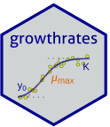
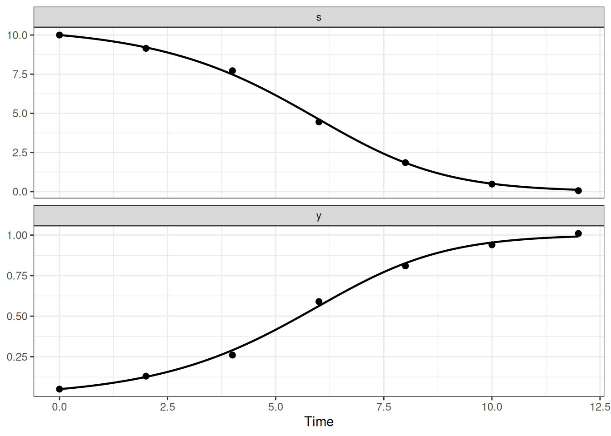

Estimation of Growth Rates with Package growthrates, Part 3: Pipelines and Outlook
Source: vignettes/part3-pipes-and-outlook.qmd
1 Overview
The growthrates package is designed to estimate growth rates (especially ) and curve parameters from a single response time series, either via smoothing splines (fit_splines(), all_splines()), linear fits to the exponential phase (fit_easylinear(), all_easylinear()), or parametric and ODE-based growth models (fit_growthmodels(), all_growthmodels()).
This vignette illustrates:
- how batch analyses can be expressed with modern R pipelines instead of
all_*functions (while keepingall_*intact for convenience and backward compatibility), - why
growthratesintentionally restricts fitting to a single response variable, and - how to transition to multivariate dynamic systems using
deSolveandFME.
2 Batch Analysis with Pipelines Instead of all_*
The all_* functions provide a compact formula interface for fitting multiple groups at once. In many workflows, however, it is more flexible to handle data preprocessing, error handling, and postprocessing explicitly inside a pipeline—using either base R (|> with split() and lapply()) or dplyr / purrr.
2.1 Comparing all_easylinear() and a Base-R Pipeline
# Classic batch call across all groups in bactgrowth
fits_all <- all_easylinear(value ~ time | strain + replicate + conc,
data = bactgrowth, h = 6, quota = 0.95)
# Equivalent base-R pipeline without extra package dependencies
fits_pipe <- bactgrowth |>
split(~ strain + replicate + conc) |>
lapply(function(df) {
fit_easylinear(df$time, df$value, h = 6, quota = 0.95)
})
# Combine estimated coefficients into a data frame (matching futurize's key handling)
coefs_pipe <- do.call(
rbind,
lapply(names(fits_pipe), function(nm) {
cf <- coef(fits_pipe[[nm]])
data.frame(group = nm, as.list(cf), check.names = FALSE)
})
)
head(coefs_pipe) group y0 y0_lm mumax lag
1 D.1.0 0.018 0.012348195 0.2048985 1.8392607
2 R.1.0 0.011 0.008831178 0.2563043 0.8568207
3 T.1.0 0.009 0.007109072 0.2651588 0.8894780
4 D.2.0 0.014 0.012385312 0.2014899 0.6081994
5 R.2.0 0.013 0.010416112 0.2407007 0.9206267
6 T.2.0 0.013 0.011889052 0.2191126 0.4076961
2.2 Comparing all_easylinear() in a dplyr pipeline
When working with dplyr, you can group by the experimental factors and fit fit_easylinear() per group before unpacking the estimated coefficients into columns.
Using a pipeline is especially helpful when blank corrections, outlier filtering, or tryCatch() guards for noisy individual wells need to be integrated directly into the workflow.
2.3 Parallelization with futurize
A limitation of standard dplyr / purrr pipelines compared to all_* functions (which accept ncores) is that they run sequentially by default. With the futurize package (Bengtsson 2025). You can parallelize map-reduce calls such as lapply() or purrr::map() by selecting a future backend (Bengtsson 2021a) (plan(multisession)) and piping the mapping step into futurize().
Note that futurize relies on optional backend packages depending on which mapping function you use: future.apply (Bengtsson 2021b) would be required to transpile base R’s lapply(), whereas furrr (Vaughan and Dancho 2022) is required to transpile purrr::map(). You can check which namespaces are currently supported in your installation with futurize::futurize_supported_packages().
Because fitting the models themselves do the main work, splitting the grouped data into a list first lets futurize() distribute fit_easylinear() across worker sessions:
library(dplyr)
library(tidyr)
library(purrr)
plan(multisession)
splits <- bactgrowth |>
split(~ strain + replicate + conc)
coefs_futurize <- names(splits) |>
map(\(nm) {
df <- splits[[nm]]
cf <- coef(fit_easylinear(df$time, df$value, h = 6, quota = 0.95))
c(list(group = nm), as.list(cf)) |>
as_tibble()
}) |>
futurize() |>
list_rbind()
plan(sequential)
head(coefs_futurize)
3 Why growthrates Focuses on a Single Response Variable
Both fit_growthmodel() / all_growthmodel() and the non-parametric methods in growthrates operate on one dependent response variable. Even when a user-defined ODE model simulates multiple internal state variables (such as biomass y and substrate s), the objective function evaluates residuals against that single observed variable.
Supporting multivariate responses directly within growthrates would substantially increase API and complexity for the user, mainly due to:
-
different units and scales (e.g., values between
0.01and1.5vs. substrate concentrations inmmol/Lor fluorescence intensities), - weighting and error structure (appropriate weights across variables depend on measurement noise, replication, and biological priorities rather than a universal default), and
- more complex return objects, plotting, and batch methods for a package aimed at lightweight, reproducible growth rate estimation.
4 Outlook: Multivariate ODE Fits with deSolve and FME
When multiple state variables are measured simultaneously, such as biomass alongside substrate depletion or product formation, and jointly help identify parameters like half-saturation constants () or yield coefficients, switching directly to deSolve and FME (modCost() and modFit()) is the natural next step.
4.1 Core Workflow
- Define the coupled ODE system as a standard derivative function for
deSolve::ode(). - Use
FME::modCost()to combine residuals across multiple observed variables with explicit scaling and weighting. - Optimize parameters with
FME::modFit().
Loading required package: rootSolveLoading required package: coda
# Coupled Monod model with biomass (y) and substrate (s)
monod_ode <- function(time, state, parms) {
with(as.list(c(state, parms)), {
mu <- mumax * s / (Ks + s)
dy <- mu * y
ds <- -dy / yield
list(c(dy, ds))
})
}
# Example objective function for two observed variables (columns: time, y, s)
obj_fun <- function(p, obs_df, y0) {
out <- ode(y = y0, times = obs_df$time, func = monod_ode, parms = p)
modCost(model = out, obs = obs_df, x = "time", weight = "std")
}
# Example observed dataset with two measured state variables
obs_df <- data.frame(
time = c(0, 2, 4, 6, 8, 10, 12),
y = c(0.05, 0.13, 0.26, 0.59, 0.81, 0.94, 1.01),
s = c(10.0, 9.15, 7.72, 4.45, 1.85, 0.48, 0.06)
)
p_start <- c(mumax = 0.6, Ks = 1.0, yield = 0.1)
p_lower <- c(mumax = 0, Ks = 1e-6, yield = 1e-6)
p_upper <- c(mumax = 10, Ks = 100, yield = 5)
fit_mv <- modFit(f = obj_fun, p = p_start, lower = p_lower, upper = p_upper,
obs_df = obs_df, y0 = c(y = 0.05, s = 10))
summary(fit_mv)
Parameters:
Estimate Std. Error t value Pr(>|t|)
mumax 1.352167 0.457580 2.955 0.0131 *
Ks 18.750281 8.776841 2.136 0.0560 .
yield 0.095233 0.000265 359.420 <2e-16 ***
---
Signif. codes: 0 '***' 0.001 '**' 0.01 '*' 0.05 '.' 0.1 ' ' 1
Residual standard error: 0.04394 on 11 degrees of freedom
Parameter correlation:
mumax Ks yield
mumax 1.0000 0.9996 0.7324
Ks 0.9996 1.0000 0.7320
yield 0.7324 0.7320 1.00004.2 Visualizing the Coupled Monod Fit
Once the multivariate fit is obtained with FME::modFit(), you can define the initial state vector y0 explicitly, simulate the fitted trajectory on a finer time grid with deSolve::ode(), and plot both observed points and model curves side by side with ggplot2 (using facets so biomass y and substrate s keep their own scales).
library(ggplot2)
library(tidyr)
y0 <- c(y = 0.05, s = 10)
time_fine <- seq(min(obs_df$time), max(obs_df$time), length.out = 200)
sim_df <- as.data.frame(
ode(y = y0, times = time_fine, func = monod_ode, parms = coef(fit_mv))
)
obs_long <- pivot_longer(obs_df, cols = c(y, s),
names_to = "variable", values_to = "value")
sim_long <- pivot_longer(sim_df, cols = c(y, s),
names_to = "variable", values_to = "value")
ggplot() +
geom_line(data = sim_long, aes(x = time, y = value), linewidth = 0.8) +
geom_point(data = obs_long, aes(x = time, y = value), size = 2) +
facet_wrap(~ variable, scales = "free_y", ncol = 1) +
labs(x = "Time", y = NULL) +
theme_bw()
5 Summary
-
growthratesprovides a lightweight, script-friendly workflow for estimating growth rates and curve parameters from a single response variable. - It includes
all_*functions for fitting multiple data sets or models within the package, and it can also be integrated into broader data pipelines. - Fitting models with multiple state variables is possible by combining
deSolveandFME(Soetaert et al. 2010; Soetaert and Petzoldt 2010). Together, they support mechanistic dynamic modeling with multiple observed state variables, explicit residual weighting, and parameter identifiability analysis.
Depending on your experimental setup and analytical pipeline, complementary packages can round out the workflow—whether for importing plate-reader data directly, analyzing dose-response relationships, or building an interactive Shiny interface.